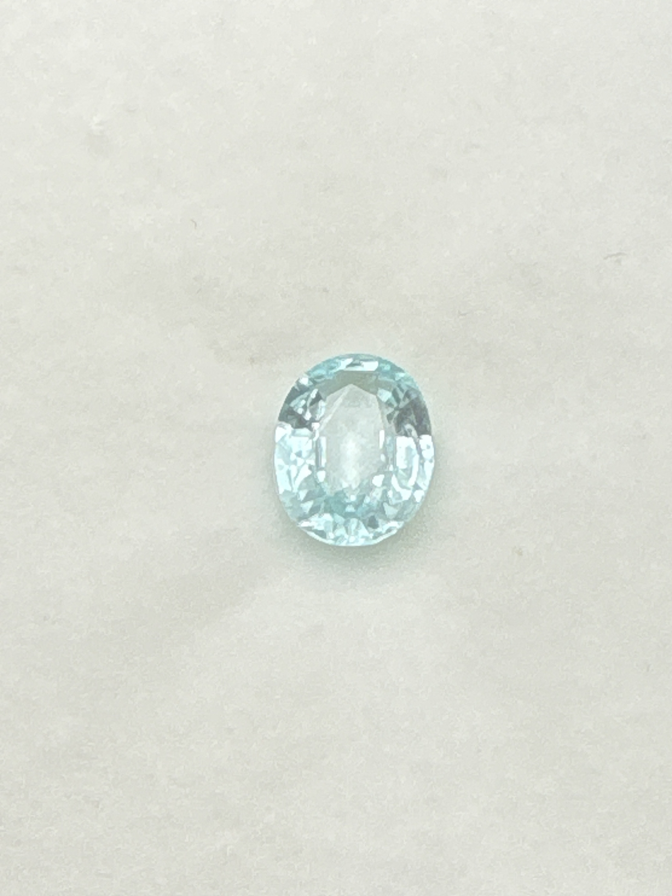

The Gem Drawer › No. 109

An oval labeled Paraiba in a pale seafoam aqua, well short of neon saturation.
| Catalogue no. | #109 |
|---|---|
| As labeled | Paraiba Tourmaline (as labeled) - CAUTION: pale color does not match genuine Paraiba's signature neon saturation, verify before listing at Paraiba prices - see notes |
| Shape / cut | Oval |
| Weight | Not recorded |
| Measurements | Not recorded |
| Colour | Pale aqua / seafoam (as photographed - notably lighter than genuine Paraiba's neon color) |
| Clarity / condition | Not recorded |
Interested in this stone, or in the collection as a whole? Terry VanWormer can answer questions about it.
Click here to inquireor email Terry directly at maxrebo34@gmail.com